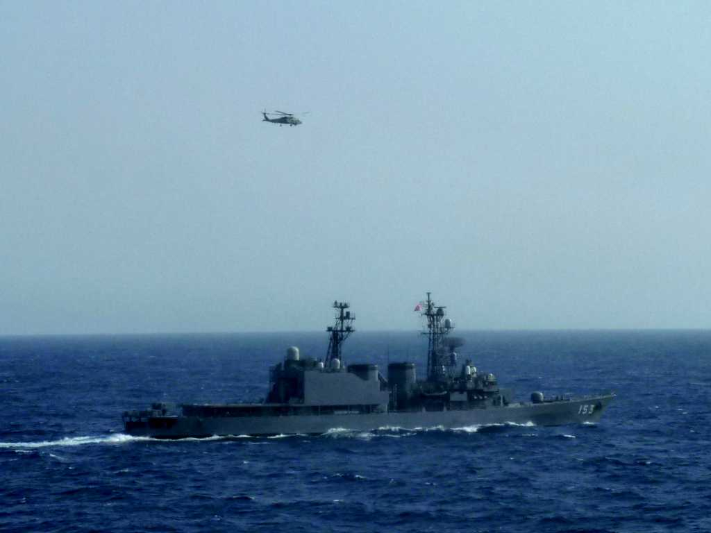
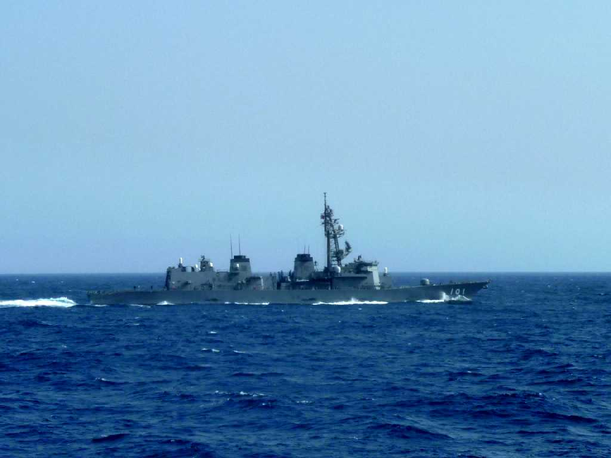

August 22 2010 on SS Oceanic DD153 Gulf of Aden
SS Oceanic はアデン湾でソマリア等の海賊対策のためＥＵ軍の護衛を予定していたが日本国政府の要請により日本出発後変更され海上自衛隊の護衛艦「ゆうぎり」(DD153)と「むらさめ」(DD101)の護衛により無事通過できた

August 22 2010 on SS Oceanic DD101 Gulf of Aden
SS Oceanic ではアデン湾付近航行中は日没から日出までデッキ等への外出禁止となった